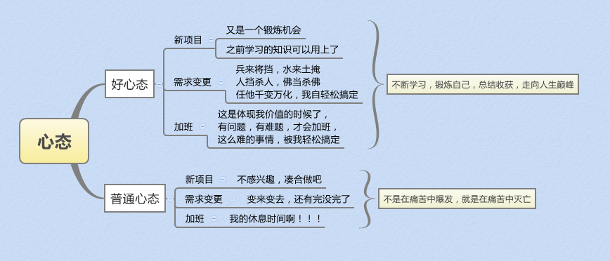
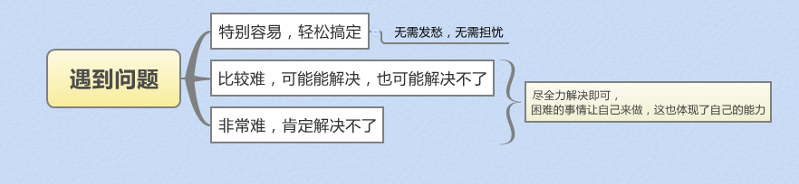

私たちの疲れ
明日プロジェクトがリリースなのに、徹夜でBUG修正、疲れる。
要件が二転三転して、このプロジェクトにいつ終わりが来るのか、疲れる。
今の技術はまもなく時代遅れになり、淘汰されそうで、新しい技術をたくさん学ばなければならない、疲れる。
毎日通勤だけで合計4時間、疲れる。
毎朝6時に起きて出勤しなければならない、疲れる。
また人がぎゅうぎゅう詰めの満員電車に乗らなければならない、疲れる。
。。。
なぜ疲れるのか
本来ゆっくり眠れるはずの夜が徹夜の残業になり、生活リズムが乱れ、体内時計も狂ってしまい、本来休むべき時に、大きな精神的プレッシャーを抱えながらBUGを修正しなければならない。心身ともに疲れ果ててしまう。
要件が二転三転し、自分の懸命な働きが認められず、成果も出せず、うっかりすると無駄になってしまうかもしれない。そんな状況なのに、さらに工期が厳しくて残業しなければならないかもしれない中で、もう一度無駄なことをしなければならない。考えるだけで、こんな日々は本当に疲れる。日も月も光を失ったかのようだ。
苦労して、こつこつと、昼夜を問わず少しの知識や技術を学んで、ようやく仕事を見つけて食べていけるようになった。ところが、数日もしないうちに、これらの技術は淘汰されてしまいそうになる。そこでまた、苦労して、こつこつと、昼夜を問わず新しい技術を学ばなければならない。本当に「ふざけるな」と言いたい。子どもたちと楽しく遊ぶことはできないのか、火鍋を食べながら歌を歌うことはできないのか。
1日24時間、仕事に8時間、睡眠に8時間、食事に2時間、残りは6時間。しかし、このわずかな残り時間の3分の2を通勤に費やさなければならない。そうなると問題は、ゲームをする時間はあるのか、新しい知識を学ぶ時間はあるのか、友達と話す時間はあるのか、女の子とデートする時間はあるのか。1日2日ならまだしも、毎日このような単調な生活に、どんな意味があるというのか。
毎朝6時に起きて出勤する。空はまだ暗く、寒風が骨を刺す。空腹の体を引きずり、必死の力を振り絞って、ようやく様々な匂いが充満した満員電車に乗り込んだ。しかし、混雑した人混みの中で、自分は「金鶏独立」(片足立ち)や「乾坤大挪移」(人混みをかき分ける武術の技)を身につけ、夢の中で張無忌(武侠小説の主人公)になったかのようだった。何度かの「ピッピッ」という電子音で現実に引き戻される。ようやく気づいた。この世で最も遠い距離は、生と死の距離ではなく、電車が駅に着いて、降りたばかりなのに、強い人波に押されてまた電車に乗せられてしまうことだ。こんな生活は本当に疲れる。
。。。
他の人も疲れているのか
私たちはこんなに疲れていて、こんなに大変なのは、私たちだけなのだろうか。目を見開いて、他の人たちを見てみよう。
農民は、朝早くから夜遅くまで働き、風に吹かれ日差しを浴びて、疲れないのか？
営業は、多くの場合、タバコと酒に付き合わなければならず、疲れないのか？
料理人は、毎日油煙の中で生活し、疲れないのか？
管理職は、毎日プロジェクトの進捗や納期に頭を悩ませ、疲れないのか？
リーダーは、中間管理職は上層部からのプレッシャー、上層部はボスからのプレッシャー、ボスは生存のプレッシャーや株主・投資家からのプレッシャーなどを受けているが、疲れないのか？
まだまだたくさんあるが、ここでは一つ一つ挙げない。
人の一生は、もしかすると子供の頃だけが楽しいのかもしれない。小学校ではいろいろな宿題、中学校では受験のプレッシャー、高校では大学受験のプレッシャー、大学では就職活動のプレッシャー、卒業後は結婚のプレッシャー、結婚したら子供を作らなければならない。子供ができてから、これから数十年、忙しく過ごすことになると知る。子供が大きくなった頃には自分も年を取り、年を取っても、今度は様々な病痛に直面しなければならない。。。そう考えると、人の一生は、結局のところ疲れるのだろうか？
他の人も疲れているのか——考え方を変えてみる
農民は、朝早くから夜遅くまで働き、風に吹かれ日差しを浴びて、苦労して、作物の豊作を勝ち取る。努力があってこそ収穫がある。疲れるのか？価値がある！
営業は、多くの場合、タバコと酒に付き合い、さまざまな営業活動をし、走り回って、一つ一つの契約を勝ち取る。努力があってこそ収穫がある。疲れるのか？価値がある！
料理人は、毎日油煙の中で生活し、鍋や皿、ありとあらゆる道具や技を駆使して、色・香り・味が揃った絶品料理を作り上げる。努力があってこそ収穫がある。疲れるのか？価値がある！
管理職は、毎日プロジェクトの進捗や納期に頭を悩ませ、綿密にやりくりして、プロジェクトの正常なリリース、製品の予定通りの発表を勝ち取る。努力があってこそ収穫がある。疲れるのか？価値がある！
リーダーは、中間管理職は上層部からのプレッシャー、上層部はボスからのプレッシャー、ボスは生存のプレッシャーや株主・投資家からのプレッシャーなどがある。プレッシャーがあればやる気が生まれ、やる気があれば成果を出せる。努力があってこそ収穫がある。疲れるのか？価値がある！
人の一生は、生老病死、さまざまなプレッシャーがある。プレッシャーがあるからこそ、それに打ち勝った喜びを味わえる。辛酸をなめてきたからこそ、生活の素晴らしさを実感できる。努力して尽くせば、必ず収穫がある。たとえ疲れても、価値がある！
疲れないためには——良い心構えを保つ
こんなにたくさん話してきたのは、職業の違いを説明したいからでも、特定の人の優越性を示したいからでもない。ただ、心構えが違えば、あなたの目に映る世界も必ず大きく異なってくるということを説明したいだけだ。

問題に直面したら、全力で解決すればいい。解決できれば、それは自分の能力を示すことになる。解決できなくても、死んで償う必要はないし、ご飯は食べなければならないし、睡眠も取らなければならない。生活はまだ続いていく。わざわざふさぎ込んで自分を苦しめることもない。良い気分を保って、次の挑戦を迎えよう。

こんなに書き、こんなに例を挙げるよりも、たった一言を胸に刻んでほしい。いずれにせよ、良い気分を保ち、自分をもっと大切にしよう！
疲れの根本原因——運動不足
人間は結局のところ動物なので、毎日適度な運動が必要だ。なぜ「適度」なのかというと、農民、労働者、スポーツ選手などは、仕事量や運動量が多すぎて、体への負荷が大きくなり、多くの怪我や病気が生じるからだ。一方、私たちプログラマーは、座りっぱなしで体を動かすことが少ないため、体の各機能が低下し、免疫力が弱まり、疲れやすくなり、さらには怪我や病気にもなりやすい。
プログラマーという職業は、概して運動不足を招きがちだ。だから体に問題が出ると、いつもこの職業のせいにしてしまう。実は、これは自分自身に対して無責任なことだ。たとえどんな理由があろうと、それは自分が怠けている言い訳に過ぎない。いわゆる「時間がない」というのは、ただ時間を作りたくないだけのことだ。
ゲームをしたり、映画を見たりする時に、10分だけ時間を割いて体を動かしたり、腕立て伏せや腹筋運動をしてみてはどうだろうか。
実は、やろうと思えば、いつでもどこでも運動する時間はある。会社が近い人は走って通勤し、遠い人は満員電車に乗ることを運動だと思う。上り下りは階段を使う。SNS(微博や微信のモーメンツ)をチェックしながら、馬歩(がに股の構え)をとる。部屋のドアを閉めて一人になったら、好きなように打ち、好きなように暴れ、酔拳よりも酔ったような自由奔放な拳を一通りやる。。。そのほかは、皆さんそれぞれで想像力を発揮してほしい。
同じプログラマーとして、他の人がどうやっているか見てみよう：
ブリスベン「Twilight Bay Run」ハーフマラソン
プログラマーのフィットネス6ヶ月まとめ
マラソンまでやっている人がいるのに、ソフトウェアパークの周りを一周走るのがそんなに難しいのか？
養生についても、「プログラマーの秋の養生法——今日もコードを書きましたか？」を読んでみてください。
己をもって人を量る——思いやりを持つ
働き始めたばかりの頃、かつて外注されていたPortalを引き継いだ。コードはそれはもうめちゃくちゃで、コメントなし、ドキュメントなし、BUGは山ほどあり、このコードの保守はまさに火の中、水の中で苦しむようなものだった。時には作者の先祖代々を呪いたくなることさえあった。
その後、新しいプロジェクトを担当することになった。要件を整理してから、調査、概要設計、詳細設計、コーディング、テストへと進めたが、なんと爽快だったことか。まさに「動感地帯(M-Zone)」のキャッチコピー「私の縄張りは私が決める」そのものだった。ドキュメントなし、コメント少なめ、様々な特性やスタイルが飛び交っていた。
その後、データベースのあるモジュールを引き継いだ。詳細設計書に基づいて、すぐにそのモジュールについて全体的な理解が得られた。なぜ特定のフレームワークを選んだのか、以前遭遇した問題、現在存在する問題、改善の方向性などまで、非常に詳細に書かれており、コードには多くのコメントがあり、全体的に見て、とても気持ちの良いものだった。
この時、振り返って自分の担当プロジェクトを見ると、以前のPortalと何が違うのだろうかと思った。いつか他の誰かがこのコードを保守することになったとき、自分のせいで、その人や彼らを水火の苦しみの中で生活させることになるのは、忍びない。情理の面から言っても、筋が通らない。
己をもって人を量り、思いやりを持つ。コメント、ドキュメント、コードスタイルを統一し、全体的な可読性と保守性を高めることで、後から来る人が快適になる。そうすれば、自分もきっと大きな喜びを感じられるのではないだろうか。
がむしゃらな学習をやめる——まとめることも一つの進歩
2年前、働き始めて間もない頃は、余暇時間がたくさんあり、気を散らすこともあまりなかったので、一心不乱に学習に時間を費やしていた。ほぼ毎日、博客園などの技術サイトをチェックして、最新の技術知識を吸収していた。そして本を読んで、体系的な学習をしていた。
知識欲が強すぎて、常に新しい知識を学びたかったので、基本的に1冊読み終えたらすぐ次の本を読み、1年で数十冊は読んだだろう。プログラミング言語からコンパイラ理論、システムプログラミングからシステムカーネル、オブジェクト指向から関数型プログラミング、マシン間通信からマルチスレッド並行処理、Webフロントエンドからビッグデータ処理まで。これらはすべて、仕事で使う知識、自分が興味を持った知識、あるいは将来のトレンドに属する知識だった。かなり幅広く学んだが、残念ながら一度見ただけで忘れないという域には達しておらず、何でも知っているように見えて、実際には何も知らない。今では、かつて読んだ本の内容を少なくとも90%は忘れてしまい、残りの一部も、概念しか知らないかもしれない。幸い、まだ時間はある。これだけ幅広く学んだことで、おおよそ自分の発展方向を確定できた。これが唯一、評価できる点だろう。
私のこのやり方は、ある意味典型的な例だろう。方法が適切でなければ、いくら学んでも、無駄になってしまうかもしれない。一般の人にとって、本を読むだけで実践しなければ、「知っている」というレベルにしか到達しない。絶えず実践し、まとめ、消化し、吸収してこそ、本当にこれらの知識を身につけることができる。
良い心構えを保ち、心が浮つくことや目先の利益を急ぐことを戒め、がむしゃらな学習をやめよう。まとめることもまた一つの進歩なのだ。
良い習慣は一生の宝
夏になると、青々とした芝生によく禿げた一角が現れる。何度か観察してみると、多くの通行人が芝生の角の曲がり角に来たとき、直角に曲がらず、芝生のこの一角をまっすぐ突っ切って渡っていることがわかった。次第にこの一角は禿げてしまった。魯迅先生のあの言葉がようやく理解できた。「世の中にはもともと道はない。歩く人が多ければ、それが道になるのだ」と。
取るに足らないように見える出来事が、人の一生に影響を与えることがある。
芝生を突っ切るのは、近道をしているように見える。最初の一回があれば、二回目もある。徐々に習慣になり、知らず知らずのうちに、自分の性格に影響を与え、近道を好む人間になってしまうかもしれない。だからこそ、習慣はとても重要なのである。
では、今から良い習慣を身につけよう。毎日運動を続けて体を鍛え、毎日自分の収穫をまとめ、毎日学んだ知識をまとめ、ノートを書き、ブログを公開する。そうすれば、そう長くかからずに、専門家でなくても、きっと達人になれるだろう。
良い習慣は一生の宝となる。
目の前のことを大切に——人生を楽しむ
私たちはいつも過去を振り返ってしまう。過去の無邪気さ、過去の束縛のなさ、過去の気軽さを思い出してしまう。特に困難に直面したときや、病気や怪我をしたときには、とどまることなく過去の素晴らしさを嘆いてしまう。そうであればこそ、目の前を大切にし、目の前の生活をしっかりと送らなければならない。未来の自分が過去を振り返ったとき、より多くの素敵な思い出があるように。
人生はゲームではない。セーブポイントはなく、やり直すこともできない。貧富や貴賤、生老病死に関わらず、すべての出来事は人生の一部である。終わりのない残業も、尽きることのないBUGも含めて。BUGを修正したら、深遠な夜空を眺めてみるのもいい。残業が終わったら、美しい日の出を鑑賞してみるのも、どうして悪いことがあろうか。
いずれにせよ、人生は続いていく。目の前を大切にし、生活を楽しみ、本当の自分を生きよう。
続けることが勝利
忍耐という名の勇気があり、堅持という名の力がある。
夜闇が大地を覆い、明月がまだ昇らないとき、深山の中で、一人とぼとぼと歩き、狼の遠吠えや猿の啼き声が聞こえる。
ただの旅人である。前方にはそびえ立つ高峰がある。一つではなく、うねりながら連なっている。彼がすべきことは、山の向こう側に辿り着くことだ。
近道はない。ただ一歩一歩歩み続けるしかない。疲れたら、青石に寄りかかって少し休む。空腹なら、固くなった乾糧を一口かじる。家が恋しくなったら、足を速める。
人は、目標を持って生きることで、疲れを力に変え、不平を奇跡に変えることができる。
そして唯一できることは、堅持することである。
なぜなら、山の向こう側は、成功と呼ばれる場所だからだ。
大切なのは継続することだ。わざわざ三更に起きて五更に眠る必要はない。最も無益なのは、一日晒して十日寒(こお)らせること、つまり飽きっぽいことだ。
多くのことは、一度や二度なら非常に簡単だが、長い間続けることは非常に難しい。
私たち開発者がなぜ疲れを感じるのかというと、おそらく体を鍛えていないからか、あるいは体を鍛えることを続けていないからだろう。
一つのことを続けるのは、一ヶ月、二ヶ月、一年、二年なら、それほど難しくないかもしれない。では、一生続けるとなると、何人にできるだろうか。
まさに堅持が難しいからこそ、本当に一つのことを続け始めたなら、必ず収穫があるはずだ。続けた時間が長ければ長いほど、収穫も多くなる。
堅持こそが勝利！
言うは易く行うは難し——心身を修め、品性を養う
理屈はみんな分かっているが、言うは易く行うは難しだ。
人間には喜怒哀楽や様々な感情があり、永遠に良い気分や良い心構えを保てるわけがない。努力して、できる限り良い心構えを保とうとすることだけでも、すでに十分素晴らしいことである。
夜も更けて静かになり、寝る前に、目を閉じて心を落ち着け、心を再び静けさに戻し、得失を考え、人生を考える。絶えず修身養性に努めれば、必ず良い心構えを保ちやすくなるだろう。
まとめ
文才がなさすぎて、余計なことばかり書いてしまったが、これだけ書いて伝えたいことは一つだけだ。皆さんに、体を鍛え続け、良い心構えを保ち、楽観的に生活に向き合い、笑顔で人生を送ってほしいということだ。
来源：http://www.cnblogs.com/hbccdf/p/4276228.html
クリックしてノートをシェア
<p style="font-size:14px;">ノートは本記事の内容を拡張したものである必要があります！</p><br> <p style="font-size:12px;"><a href="../tougao.html" target="_blank">記事の投稿は、こちらをクリック</a></p> <p style="font-size:14px;"><a href="./runoob-user-test-intro.html" target="_blank">登録招待コードの取得方法</a></p> <h3 class="text-muted"><i class="fa fa-info-circle" aria-hidden="true"></i> ノートを共有する前に<a href=".." class="runoob-pop">ログイン</a>が必要です！</h3> <p><a href="./runoob-user-test-intro.html" target="_blank">登録招待コードの取得方法</a></p>